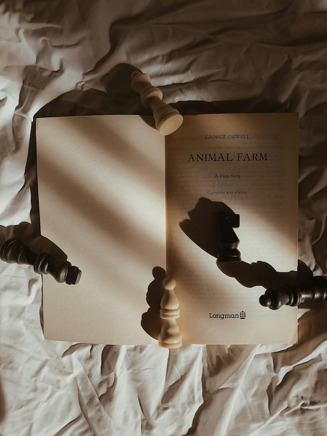

2025 Reading Summary
On this page, I will go over my personal reading experience of 2025 by using my data from Goodreads. I had a goal of reading thirty-eight books and a more important one of stepping out of my comfort genre.
Reading Stats
- 29 Books Read
- 9,286 Pages Read
- 320 Pages Average Book Length
Five Star Books

- Animal Farm by George Orwell
- Tuck Everlasting by Natalie Babbit
- Ruthless Vows by Rebecca Ross
Least Favorite Books
- The Winner's Crime by Marie Rutkoski
- The Southern Book Club's Guide to Slaying Vampires by Grady Hendrix
- Fearless by Lauren Roberts